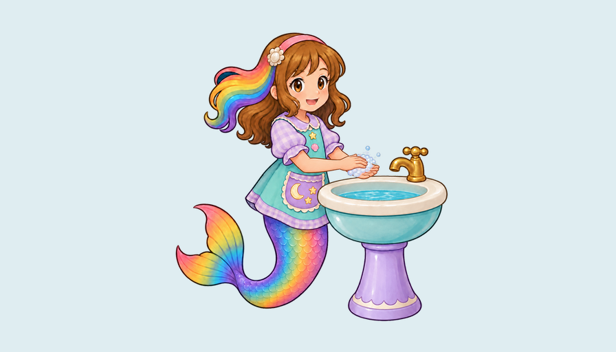

Current Nursery game reviewConnected palm scrubbing and attention
One bounded local ComfyUI study has been submitted through the developed workflow. It tests two gentle rubbing strokes with joined wrists, true opposite-palm contact and attention to the hands. The preserved palm02 source meets the provisional static 4.5 floor; current complete gameplay washing remains 3.9 and attention 3.8.
Motion reference only. This study has no runtime, cinematic delivery or owner acceptance. Review every generated frame before using it as movement direction; a render receipt alone grants no visual score.

Bound source, prompt, workflow and clip contract · Exact timeline prompt · Native dispatch evidence · Actual submitted graph
First native render passes machine execution but fails the action floor: reference action 3.6, contact 3.8, attention 3.1. Every one of 41 native frames directly inspected. The failed study is preserved; current gameplay action 3.9 is unchanged.
Every individual motion evaluation · All native frames and exact hashes